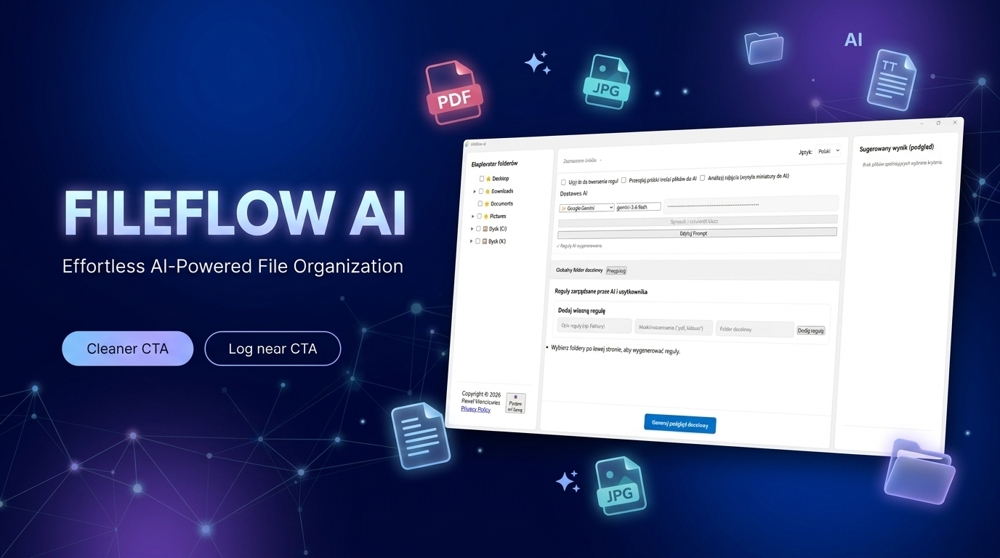

Zasilany przez Google Gemini 1.5 / 2.5
Inteligentne porządkowanie plików z napędem AI
Zapomnij o bałaganie w folderze Pobrane i na Biurku. FileFlow AI analizuje zawartość Twoich dokumentów oraz obrazów, tworząc automatyczne reguły segregacji w ułamku sekundy.
Bezpieczne i lokalne przesyłanie • Szybka edycja promptu
